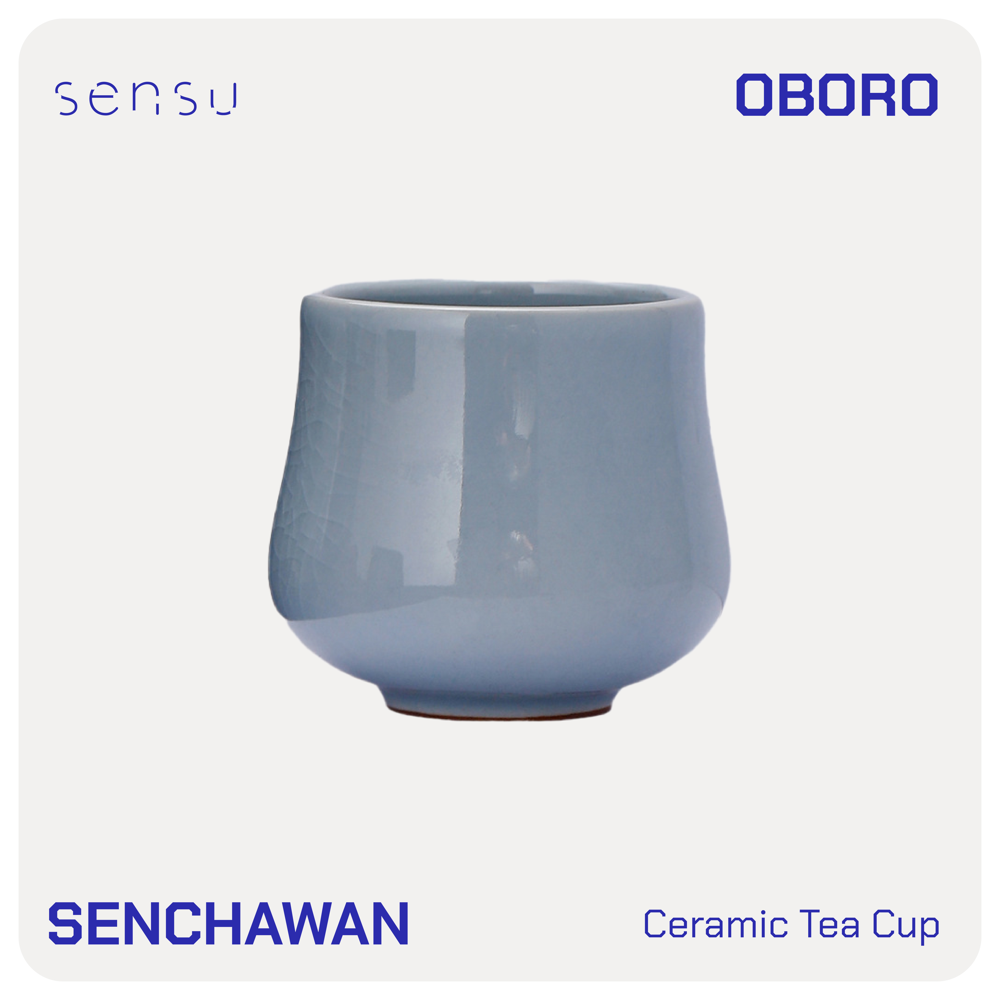
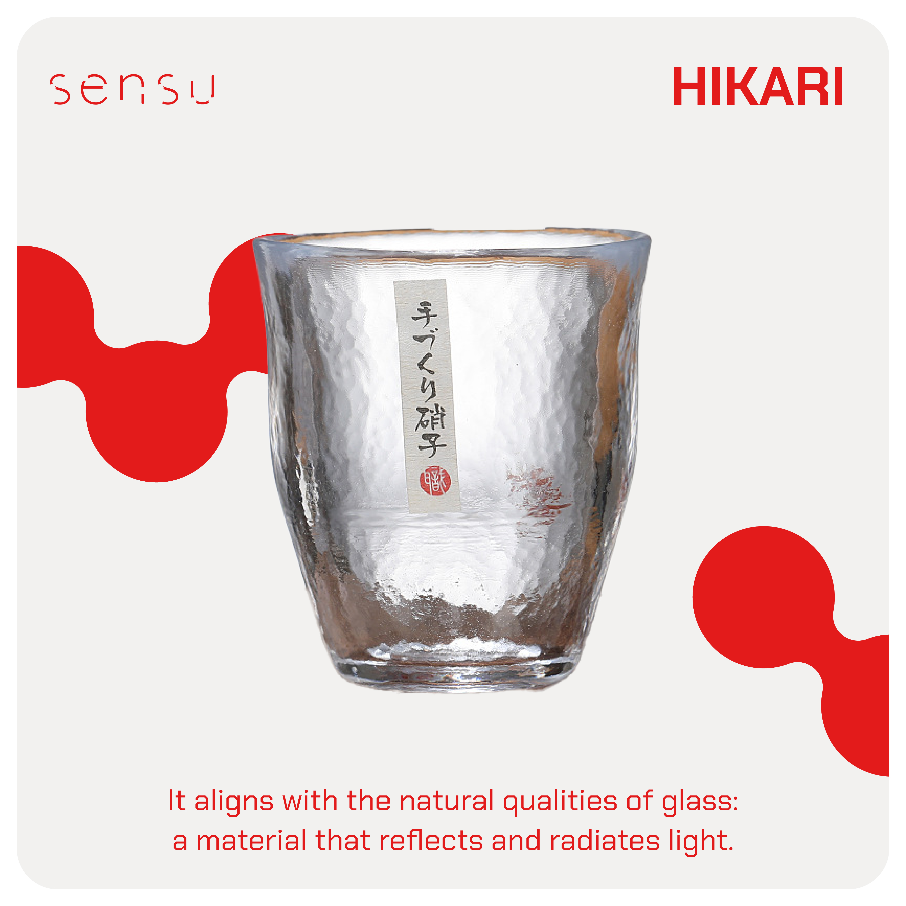
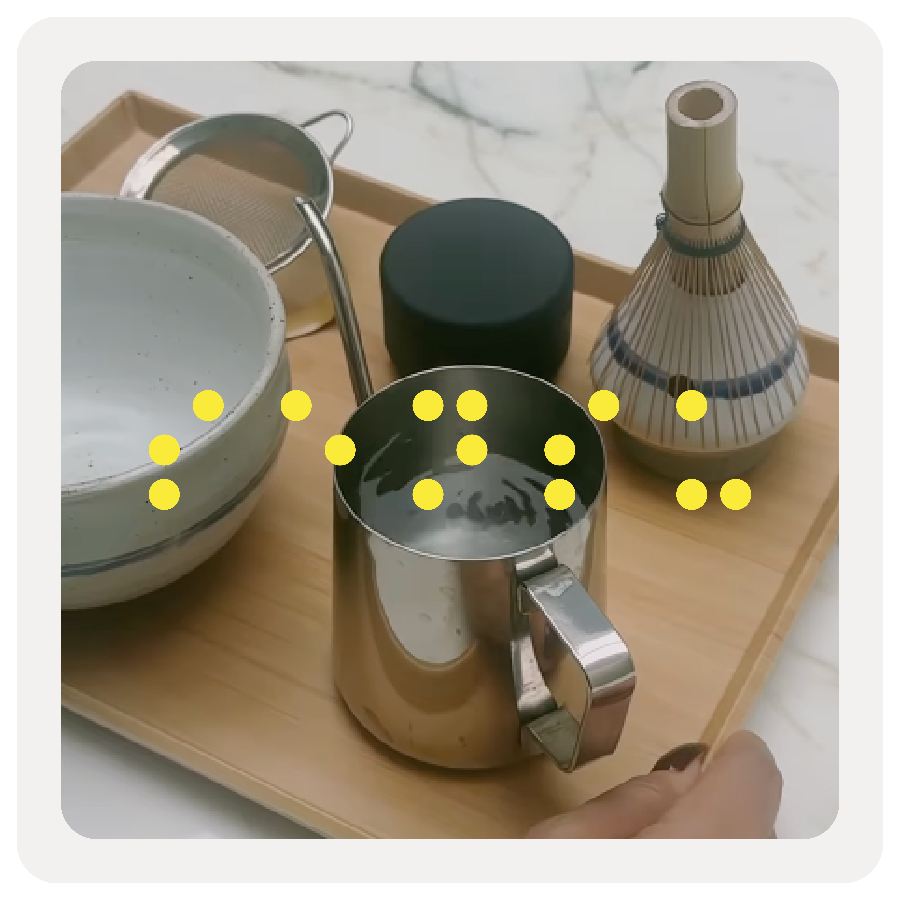

HIKARI 光
Glass · light
Heat-formed glass that reflects and radiates light. For showcasing the colour of a drink — matcha, hojicha, or a slow morning brew.
See pieces →SENSU · センス
A contemporary drinkware and tea-tools brand inspired by the quiet beauty of Japanese rituals. Each piece turns drink-making into a moment of stillness, intention, and grace.
ABOUT THE BRAND
In Japanese, Sensu (センス) means taste, intuition, or refined sense. At Sensu, we honour the timeless rituals of Japanese culture through contemporary tools crafted for the modern hand.
Every bowl, cup and whisk we offer is designed with purpose — to bring stillness, clarity, and beauty into your daily ritual. Our products blend traditional forms with modern materials, from handcrafted ceramics to clear, minimal glass.
“Elegance lies in intention, and even the smallest moment can become a practice of presence.”
COLLECTIONS
Each material carries a feeling. Glass holds light, ceramic holds stillness, bamboo holds simplicity. Together they hold a ritual.
Glass · light
Heat-formed glass that reflects and radiates light. For showcasing the colour of a drink — matcha, hojicha, or a slow morning brew.
See pieces →Ceramic · haze
Handcrafted ceramics fired in muted clay tones — soft, warm, and grounding. Designed to hold heat, and to slow the morning.
See pieces →Bamboo · nature
Whisks and tools cut from fine bamboo. Built for daily use, the chasen creates smooth, frothy matcha — just as it has for centuries.
See pieces →Premium · craft
Editorial, considered, and a touch playful. Our premium line is a tribute to the care and craft behind each form.
See pieces →PRODUCT HIGHLIGHT · 01



Products shown are samples from the Sensu line. Full catalog launching with our flagship store.
SENSU CIRCLE
Sensu is a collection of tea tools and tableware designed to awaken the senses. Crafted from glass, ceramic, bamboo and brass — each piece invites stillness, touch, and quiet connection.
#SensuCircle



CONTACT · お問い合わせ
Balanced. Subtle. Timeless. Drop by the studio or send a note — we’ll answer in the same quiet tone.